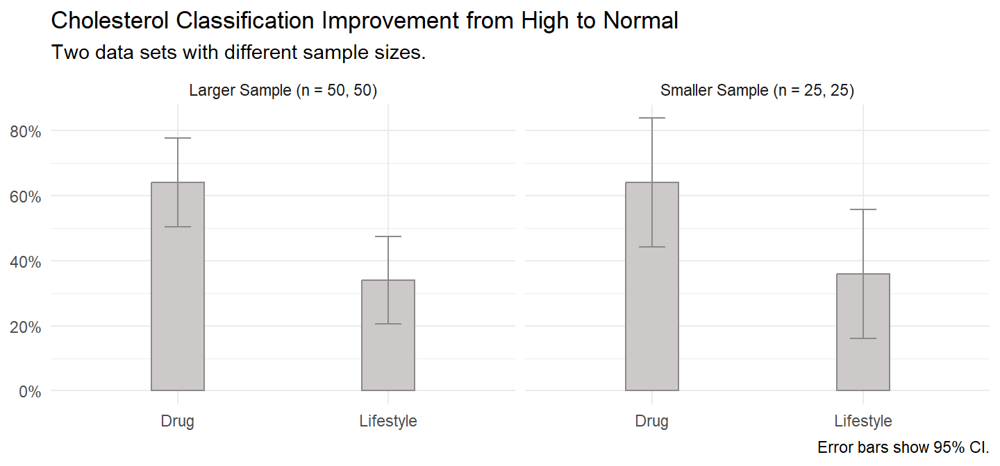

z_dat <- read.spss(
"./input/test-of-two-proportions-individual-scores.sav",
to.data.frame = TRUE
)
fisher_dat <- z_dat[seq(2, 100, 2),]8 Binomial ~ Binomial
The tests presented here compare two proportions. That is, the outcome is binomial (1|0) and you want to compare the proportion (outcome = 1) between two groups.
8.1 Two Proportion Z-Test
Note
The two propportion Z-test and the chi-square test of homogeneity produce the same statistical significance result because they are algebraically identical. The Z statistic equals \(\sqrt{\chi^2}\). There is no Z-test function in the stats library.
The Z-test uses the difference in sample proportions, \(d = p_1 - p_2\), to test whether the difference in population proportions, \(\delta = \pi_1 - \pi_2\), differs from an hypothesized difference, \(d_0 = \pi_1 - \pi_2\), or to construct a \((1−\alpha)\%\) confidence interval around \(d\) to estimate \(\delta\).
The Z-test applies when the central limit theorem conditions hold so that the normal distribution approximates the binomial distribution.
- The sample is independently drawn, meaning random assignment (experiments) or random sampling without replacement from \(n < 10\%\) of the population (observational studies),
- there are at least \(n_i p_i >= 5\) successes and \(n_i (1 - p_i) >= 5\) failures for each group, \(i\),
- the sample sizes are both \(n_i >= 30\), and
- the probability of success for each group is not extreme, \(0.2 < \pi_i < 0.8\).
If these conditions hold, the sampling distribution of \(\delta\) is normally distributed around \(d\) with standard error \(se_d = \sqrt{\frac{p_1(1 - p_1)}{n_1} + \frac{p_2(1 − p_2)}{n_2}}\). When \(d_0 = 0\) (almost always), pool the proportions, so \(se_d = \sqrt{\frac{p(1 - p)}{n_1} + \frac{p(1 − p)}{n_2}}\), or simply:
\[se_d = \sqrt{p(1-p)\left(\frac{1}{n_1} + \frac{1}{n_2}\right)} \tag{8.1}\]
The Z-test statistic is \[Z = \frac{d-d_0}{se_{d}} \tag{8.2}\]
Define a \((1 − \alpha)\%\) confidence interval as \(d \pm z_{1-\alpha / 2}se_d\).
8.2 Chi-Square Test of Homogeneity
The chi-square test of homogeneity tests whether frequency counts of the R levels of a categorical variable are distributed identically across the C populations. It tests whether observed joint frequency counts \(O_{ij}\) differ from expected frequency counts \(E_{ij}\) under the independence model (the model of independent explanatory variables, \(\pi_{ij} = \pi_{i+} \pi_{+j}\). \(H_0\) is \(O_{ij} = E_{ij}\).
There are two possible test statistics for this test, Pearson
\[X^2 = \sum \frac{(O_{ij} - E_{ij})^2}{E_{ij}} \tag{8.3}\]
and deviance
\[G^2 = 2 \sum_{ij} O_{ij} \log \left( \frac{O_{ij}}{E_{ij}} \right). \tag{8.4}\]
8.3 Fisher’s Exact Test
Fisher’s exact test is an “exact test” in that the p-value is calculated exactly from the hypergeometric distribution rather than relying on the approximation that the test statistic distribution approaches \(\chi^2\) as \(n \rightarrow \infty\). The test is applicable in situations where
- the row totals \(n_{i+}\) and the column totals \(n_+j\) are fixed by study design (rarely applies), and
- the expected values of >20% of cells (at least 1 cell in a 2x2 table) have expected cell counts >5, and no expected cell count is <1.
The p-value from the test is computed as if the margins of the table are fixed. This leads under a null hypothesis of independence to a hypergeometric distribution of the numbers in the cells of the table (Wikipedia). Fisher’s exact test is useful for small n-size samples where the chi-squared distribution assumption of the chi-squared and G-test tests fails. Fisher’s exact test is overly conservative (p-values too high) for large n-sizes.
The Hypergeometric density function is \[f_X(k|N, K, n) = \frac{{{K}\choose{k}}{{N-K}\choose{n-k}}}{{N}\choose{n}}. \tag{8.5}\]
The density is the exact hypergeometric probability of observing this particular arrangement of the data, assuming the given marginal totals, on the null hypothesis that the conditional probabilities are equal.
8.4 Case Study
This case study uses a data set from Laerd and a second version modified to have small sample size. The first data set passes the Z-test requirements. The second (in parentheses), fails the sample sizes condition.
A researcher recruits 100 (50) patients who have a “high” classification of cholesterol and a poor lifestyle. The researcher randomly assigns 50 (25) of them to a drug intervention and 50 (25) to a lifestyle intervention. After six months, a doctor reclassifies the patients’ cholesterol classification as either “high” or “normal”.
Show the code
bind_rows(
`Larger Sample (n = 50, 50)` = z_dat,
`Smaller Sample (n = 25, 25)` = fisher_dat,
.id = "set"
) |>
count(set, intervention, risk_level) %>%
summarize(
.by = c(set, intervention),
p = sum(if_else(risk_level == "Normal", n, as.integer(0))) / sum(n),
n = sum(n),
se = sqrt(p * (1 - p) / n),
ci_lwr = p - qt(.975, n - 1) * se,
ci_upr = p + qt(.975, n - 1) * se
) %>%
ggplot(aes(x = intervention)) +
geom_col(aes(y = p), fill = "snow3", color = "snow4", width = 0.25) +
geom_errorbar(aes(ymin = ci_lwr, ymax = ci_upr), color = "snow4", width = .125) +
theme_minimal() +
scale_y_continuous(labels = scales::percent) +
facet_wrap(vars(set)) +
labs(x = NULL, y = NULL,
title = "Cholesterol Classification Improvement from High to Normal",
subtitle = "Two data sets with different sample sizes.",
caption = "Error bars show 95% CI.")
Show the code
x <-
z_dat |>
gtsummary::tbl_cross(
row = intervention,
col = risk_level,
percent = "row",
label = list(intervention = "Intervention", risk_level = "Risk Level")
)
y <-
fisher_dat |>
gtsummary::tbl_cross(
row = intervention,
col = risk_level,
percent = "row",
label = list(intervention = "Intervention", risk_level = "Risk Level")
)
gtsummary::tbl_merge(
list(x, y),
tab_spanner = c("Larger Sample", "Smaller Sample")
) |>
gtsummary::as_gt() |>
gt::tab_header(title = "Summary statistics, Z-Test case, Fisher test case.") |>
gt::tab_options(heading.align = "left")| Summary statistics, Z-Test case, Fisher test case. | ||||||
|---|---|---|---|---|---|---|
Larger Sample
|
Smaller Sample
|
|||||
| High | Normal | Total | High | Normal | Total | |
| Intervention | ||||||
| Drug | 18 (36%) | 32 (64%) | 50 (100%) | 9 (36%) | 16 (64%) | 25 (100%) |
| Lifestyle | 33 (66%) | 17 (34%) | 50 (100%) | 16 (64%) | 9 (36%) | 25 (100%) |
| Total | 51 (51%) | 49 (49%) | 100 (100%) | 25 (50%) | 25 (50%) | 50 (100%) |
Z-Test
There is no R function that performs a two-sample Z-test. Let’s do it manually.
dat_drug <- z_dat |> filter(intervention == "Drug")
dat_lifestyle <- z_dat |> filter(intervention == "Lifestyle")
n_drug <- nrow(dat_drug)
n_lifestyle <- nrow(dat_lifestyle)
p_drug <- mean(dat_drug$risk_level == "Normal")
p_lifestyle <- mean(dat_lifestyle$risk_level == "Normal")
p_pool <- mean(z_dat$risk_level == "Normal")
se <- sqrt(p_pool * (1 - p_pool) * (1 / n_drug + 1 / n_lifestyle))
(z <- (p_drug - p_lifestyle) / se)
## [1] 3.0006
(p_value <- pnorm(z, lower.tail = FALSE) * 2) # mult by 2 for two-sided test.
## [1] 0.002694481100 patients with a high cholesterol classification were randomly assigned to either a drug or lifestyle intervention, 50 in each intervention. The test of two proportions used was the two sample Z-test. At the conclusion of the drug intervention, 32 patients (64%) had improved their cholesterol classification from high to normal compared to 17 patients (34%) in the lifestyle intervention, a difference in proportions of 0.30, p = 0.0027.
Chi-Square
The chi-square test achieves an identical result. The X-squared value is double the Z statistic and the p values are identical.
(chisq_test <- z_dat %>%
tabyl(intervention, risk_level) %>%
chisq.test(correct = FALSE))
Pearson's Chi-squared test
data: .
X-squared = 9.0036, df = 1, p-value = 0.002694100 patients with a high cholesterol classification were randomly assigned to either a drug or lifestyle intervention, 50 in each intervention. The test of two proportions used was the chi-square test of homogeneity. At the conclusion of the drug intervention, 32 patients (64%) had improved their cholesterol classification from high to normal compared to 17 patients (34%) in the lifestyle intervention, a difference in proportions of 0.30, p = 0.0027.
Fisher’s Exact
Use the Fisher exact test from the janitor package.
(fisher_test <- fisher_dat %>%
tabyl(intervention, risk_level) %>%
fisher.test())
Fisher's Exact Test for Count Data
data: .
p-value = 0.08874
alternative hypothesis: true odds ratio is not equal to 1
95 percent confidence interval:
0.08497039 1.15362199
sample estimates:
odds ratio
0.3241952 50 patients with a high cholesterol classification were randomly assigned to either a drug or lifestyle intervention, 25 in each intervention. At the conclusion of the drug intervention, 16 patients (64%) had improved their cholesterol classification from high to normal compared to 9 patients (36%) in the lifestyle intervention. Due to small sample sizes, Fisher’s exact test was run. There was a non-statistically significant difference in proportions of 0.28, p = 0.0887.